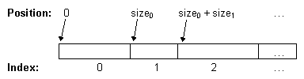

- java.lang.Object
-
- javax.swing.SizeSequence
-
public class SizeSequence extends Object
ASizeSequence对象有效地维护有序的大小和相应位置的列表。SizeSequence可能适合的情况是显示多行不等大小的组件。 在这种情况下，可以使用单个SizeSequence对象跟踪所有行的高度和Y位置。另一个例子是多列组件，例如
JTable，其中列大小并不都相等。JTable可能会使用单个SizeSequence对象来存储所有列的宽度和X位置。 然后JTable可以使用SizeSequence对象来查找对应于某个位置的列。 当一个或多个列大小更改时，JTable可以更新SizeSequence对象。下图显示了多列组件的大小和位置数据之间的关系。

在图中，第一索引（0）对应于第一列，第二索引（1）到第二列，等等。 第一列的位置从0开始，列占用大小0像素，其中大小0是由
getSize(0)返回的值。 因此，第一列结束于大小0 - 1。第二柱然后开始在该位置大小0并占据大小1（getSize(1)）的像素。请注意，
SizeSequence对象简单地表示沿轴的间隔。 在我们的示例中，间隔代表高度或宽度（以像素为单位）。 但是，任何其他计量单位（例如，以天为单位）都可以同样有效。实施说明
通常当存储条目的大小和位置时，可以选择存储大小或存储其位置。 渲染过程中需要的两个常见操作是：getIndex(position)和setSize(index, size)。 无论选择哪种内部格式，当条目数量变大时，这些操作之一都是昂贵的。 如果存储大小，则查找包含特定位置的条目的索引在条目数量上是线性的。 如果替换存储位置，则在特定索引处设置条目的大小需要更新受影响的条目的位置，这也是线性计算。像上述技术一样，这个类在内部保存一个N个整数的数组，但是使用混合编码，这是基于大小和基于位置的方法之间的一半。 结果是数据结构占用相同的空间来存储信息，但可以在Log（N）时间而不是O（N）中执行大多数操作，其中N是列表中的条目数。
在条目数量上保持为O（N）的两个操作是
insertEntries和removeEntries方法，这两个操作通过将内部数组转换为一组整数大小来实现，将其复制到新数组中，然后重新构建混合表示到位。- 从以下版本开始：
- 1.3
-
-
构造方法摘要
构造方法 Constructor 描述 SizeSequence()创建一个不包含条目的新的SizeSequence对象。SizeSequence(int numEntries)创建一个新的SizeSequence对象，其中包含指定数量的条目，全部初始化为具有大小0。SizeSequence(int[] sizes)创建一个包含指定大小的新的SizeSequence对象。SizeSequence(int numEntries, int value)创建一个新的SizeSequence对象，其中包含指定数量的条目，全部初始化为具有value大小。
-
方法摘要
所有方法 接口方法 具体的方法 Modifier and Type 方法 描述 intgetIndex(int position)返回与指定位置对应的条目的索引。intgetPosition(int index)返回指定条目的起始位置。intgetSize(int index)返回指定条目的大小。int[]getSizes()返回所有条目的大小。voidinsertEntries(int start, int length, int value)在这个SizeSequence添加一组连续的条目。voidremoveEntries(int start, int length)从这个SizeSequence删除一组连续的条目。voidsetSize(int index, int size)设置指定条目的大小。voidsetSizes(int[] sizes)重新设置这个SizeSequence对象，使用sizes参数中的数据。
-
-
-
构造方法详细信息
-
SizeSequence
public SizeSequence()
创建一个不包含条目的新的SizeSequence对象。 要添加条目，您可以使用insertEntries或setSizes。
-
SizeSequence
public SizeSequence(int numEntries)
创建一个新的SizeSequence对象，其中包含指定数量的条目，全部初始化为大小为0。- 参数
-
numEntries- 要跟踪的大小数 - 异常
-
NegativeArraySizeException- 如果是numEntries < 0
-
SizeSequence
public SizeSequence(int numEntries, int value)创建一个新的SizeSequence对象，其中包含指定数量的条目，全部初始化为具有value大小。- 参数
-
numEntries- 要跟踪的大小数 -
value- 每个大小的初始值
-
SizeSequence
public SizeSequence(int[] sizes)
创建一个包含指定大小的新的SizeSequence对象。- 参数
-
sizes- 要包含在SizeSequence的大小的数组
-
-
方法详细信息
-
setSizes
public void setSizes(int[] sizes)
重新设置此SizeSequence对象，使用sizes参数中的数据。 此方法重新初始化此对象，使其包含与sizes数组一样多的条目。 每个条目的大小都将初始化为sizes相应项目的sizes。- 参数
-
sizes- 要包含在SizeSequence的大小的数组
-
getSizes
public int[] getSizes()
返回所有条目的大小。- 结果
- 一个包含此对象中的大小的新数组
-
getPosition
public int getPosition(int index)
返回指定条目的起始位置。 例如，getPosition(0)返回0，getPosition(1)等于getSize(0)，getPosition(2)等于getSize(0)+getSize(1)，依此类推。请注意，如果
index大于length返回的值可能无意义。- 参数
-
index- 需要其位置的条目的索引 - 结果
- 指定条目的起始位置
-
getIndex
public int getIndex(int position)
返回与指定位置对应的条目的索引。 例如，getIndex(0)为0，因为第一个条目总是从0开始。- 参数
-
position- 条目的位置 - 结果
- 占据指定位置的条目的索引
-
getSize
public int getSize(int index)
返回指定条目的大小。 如果index超出了范围(0 <= index < getSizes().length)，行为是未指定的。- 参数
-
index- 与条目对应的索引 - 结果
- 条目的大小
-
setSize
public void setSize(int index, int size)设置指定条目的大小。 请注意，如果index的值不在以下范围内：(0 <= index < getSizes().length)该行为是未指定的。- 参数
-
index- 与条目对应的索引 -
size- 条目的大小
-
insertEntries
public void insertEntries(int start, int length, int value)在这个SizeSequence添加一组连续的条目。 请注意，start和length的值必须满足以下条件：(0 <= start < getSizes().length) AND (length >= 0)。 如果不满足这些条件，则该行为是未指定的，并且可能会抛出异常。- 参数
-
start- 要分配给组中第一个条目的索引 -
length- 组中的条目数 -
value- 要分配给每个新条目的大小 - 异常
-
ArrayIndexOutOfBoundsException- 如果参数超出范围：（0 <= start < (getSizes().length)) AND (length >= 0)
-
removeEntries
public void removeEntries(int start, int length)从这个SizeSequence删除一组连续的条目。 请注意，start和length的值必须满足以下条件：(0 <= start < getSizes().length) AND (length >= 0)。 如果不满足这些条件，则该行为是未指定的，并且可能会抛出异常。- 参数
-
start- 要删除的第一个条目的索引 -
length- 要删除的条目数
-
-